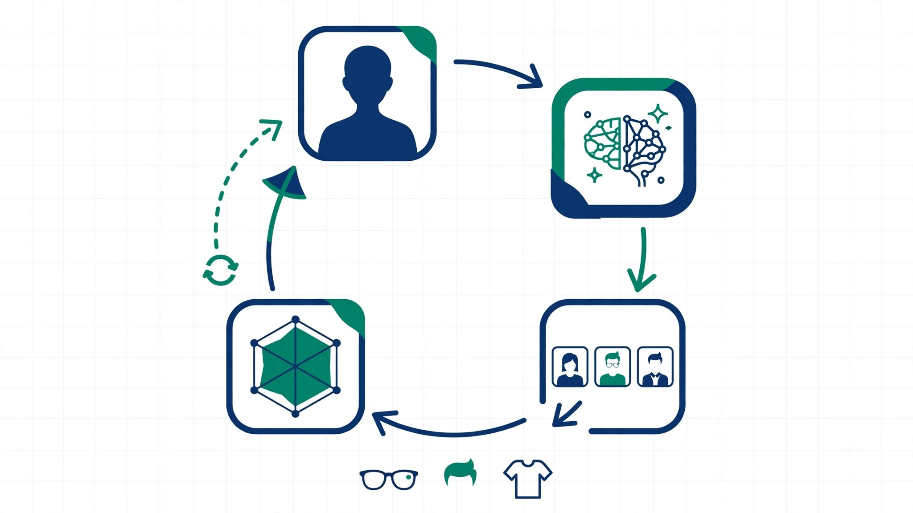

Automated Iterative Appearance Optimization via AI Image Generation and Vision Scoring

The Problem
Personal appearance optimization has always been subjective, slow, and expensive. You hire a stylist, get a second opinion, maybe snap a few photos in the fitting room mirror. What if an AI could systematically explore thousands of style combinations from a single photo, score each one on validated social perception dimensions, and converge on your optimal look?
That's what this protocol does. And we're publishing it as open-source prior art so nobody can patent it.
The Core Insight
Appearance optimization is a search problem over a high-dimensional style space. Instead of relying on intuition alone, an AI agent can:
- Define discrete style dimensions (glasses, hair, clothing, palette, background)
- Generate variant images from a base photo using AI image generation
- Score each variant using a vision-language model on six social perception dimensions
- Iterate around winners using evolutionary search (exploitation + exploration)
- Converge on an optimal recommendation backed by quantified scores
The Six Dimensions
Rather than scoring "attractiveness" as a monolithic concept, the protocol evaluates six independent social perception dimensions drawn from psychology research:
Weighted For Your Goal
The composite score is weighted by what you want to project. Click a profile to see how the weights shift:
What This Protocol Does NOT Do
- Does not change your face or body. Identity is preserved in every generated variant: only styling changes.
- Does not optimize for a single beauty standard. Six independent dimensions; you choose the weights.
- Does not replace your judgment. The AI recommends; you decide.
- Does not score "attractiveness." Social perception ≠ hotness.
📖 The Full Story
This protocol was validated in a real session on July 10, 2026: 48+ images, 6 batches, 6 style dimensions, convergence in 6 rounds. Best look: FW2026 Color Pop (navy coat + emerald scarf) at a composite score of 8.5/10. Full methodology, results, and code links in the tabs above.
Interactive Scoring Rubric
Each dimension is scored 1-10 using these criteria. The same vision-model prompt is used for every image in a session to ensure consistency. Hover or tap each card for details.
Scoring Prompt Template
The exact prompt used for vision-model scoring. Copy-pasted verbatim for every image, with no paraphrasing between variants:
You are an expert appearance analyst. Score this photo of a person on a scale of 1-10
for each of the following dimensions. Be honest but not cruel. Consider the overall
impression, not just individual elements.
Dimensions:
- Trustworthiness: Does this person seem honest, reliable, and approachable?
- Competence: Does this person seem capable, professional, and intelligent?
- Warmth: Does this person seem friendly, warm, and welcoming?
- Style: Is the overall aesthetic cohesive, intentional, and flattering?
- Dominance: Does this person project confidence, authority, and presence?
- Age Vitality: Does this person look healthy, vibrant, and energetic?
Return ONLY a JSON object:
{"trustworthiness": N, "competence": N, "warmth": N, "style": N,
"dominance": N, "age_vitality": N, "notes": "brief observation"}
Composite Score Calculation
composite = (trust + competence + warmth + style + dominance + vitality) / 6
# Example: FW2026 Color Pop
composite = (8 + 9 + 8 + 10 + 8 + 8) / 6 = 8.5
Scoring Discipline Rules
- Same model for all scores in a run. No switching between GPT-4V and Claude mid-optimization.
- Exact same prompt. Copy-paste. No paraphrasing.
- Score before reviewing. Generate and score all variants in a batch before looking at results. Prevents anchoring bias.
- The rubric is absolute. A 7 means the same thing in round 1 and round 10. No score inflation.
- Notes are required. Brief qualitative observation with every score set. This catches anomalies.
The Pipeline
From the real-world July 10 session. This is how an AI agent actually runs the optimization loop.
Baseline Photo + Scoring
Take one front-facing photo with good lighting. Score it on all six dimensions. This is the reference point for every future comparison.
Dimension Grid Definition
Define the searchable style space: glasses (14+ options), outfits (9+ styles), hairstyles (6), beard styles (6), FW2026 runway trends (8), backgrounds (4). The cartesian product = thousands of combinations.
Batch Generation (8-16 images)
Use an image generation model (gpt-image-2, Stable Diffusion img2img, etc.) to produce variants. First round: vary one dimension at a time. Later rounds: combine winning elements. Include 2 wild cards per round.
Vision-Model Scoring
Every generated image scored by the same vision-language model using the same prompt. For top candidates, run a multi-judge panel: Fashion Critic, Social Perception Analyst, Street Style Photographer.
Ranking + Composite Score
Compute weighted composite for each variant. Rank all variants. Select the round winner.
Neighborhood Mutation
Generate variants around the winner: 70% exploitation (one-step mutations), 15% combination (mix top 3 elements), 15% exploration (random grid sampling to avoid local optima).
Convergence Detection
Stop when both conditions hold: (1) score improvement < 0.5 for 3 consecutive rounds, AND (2) standard deviation of top 5 < 1.0. In the July 10 session, convergence hit at Batch 6.
Final Report
Present the winning look with full scores, baseline comparison, variable impact analysis, and qualitative insights from the multi-judge panel.
The Dimension Grid
The full search space from the July 10 session:
| Dimension | Options Tested | Count |
|---|---|---|
| Glasses | None + 14 Meta Ray-Ban SKUs (skyward, skyler, headliner, etc.), tortoiseshell, round metal, thick black, rectangular clear | 17 |
| Outfit | Henley, blazer+tee, field jacket, overcoat, leather jacket, turtleneck, polo, button-down, sweater | 9 |
| Hairstyle | Current, shorter, longer, styled back, side part, textured | 6 |
| Beard | Clean shaven, light stubble, short groomed, medium, full, shaped | 6 |
| FW2026 Trends | Color pop, monochrome, oversized outerwear, tailored minimalism, earth tones, double-breasted, knit layers, streetwear-lux | 8 |
| Background | Studio clean, outdoor natural, urban, home office | 4 |
Rate Limit Strategy
Image generation APIs (especially OpenAI gpt-image-2) have aggressive rate limits. The session used:
- 429 detection → 60-minute pause before retrying
- MiniMax fallback model for continued generation during OpenAI cooldown
- Cron scheduling: hourly batch runs that resume from where the last session paused
- State persistence: JSON state file tracks batches completed, current best, convergence status
Practical throughput: ~40-60 images/hour per OpenAI account.
Leaderboard: Top 10 Looks
From 48+ images across 6 batches. Composite is the simple average of all 6 dimensions (1–10 scale). Baseline: 6.3.
| # | Look | 🤝 Trust | 🎯 Comp | 😊 Warm | 👔 Style | 💪 Dom | ✨ Age | Composite | Δ |
|---|---|---|---|---|---|---|---|---|---|
| 🥇 1 | FW2026 Color Pop Navy coat + emerald scarf | 8 | 9 | 8 | 10 | 8 | 8 | 8.5 | +2.2 |
| 🥈 2 | Overcoat + Textured Side Part | 7 | 9 | 7 | 9 | 8 | 7 | 7.8 | +1.5 |
| 🥉 3 | Field Jacket + Stubble | 7 | 7 | 8 | 8 | 7 | 7 | 7.3 | +1.0 |
| 4 | Henley + Short Groomed Beard | 8 | 6 | 9 | 7 | 6 | 8 | 7.3 | +1.0 |
| 5 | Blazer + Tee + Tortoiseshell | 6 | 9 | 5 | 9 | 7 | 7 | 7.2 | +0.8 |
| 6 | Leather Jacket + Styled Back | 6 | 7 | 6 | 9 | 8 | 7 | 7.2 | +0.8 |
| 7 | Turtleneck + No Glasses | 6 | 8 | 5 | 9 | 7 | 7 | 7.0 | +0.7 |
| 8 | FW2026 Tailored Minimalism | 7 | 8 | 7 | 7 | 6 | 7 | 7.0 | +0.7 |
| 9 | FW2026 Earth Tones | 7 | 7 | 7 | 8 | 6 | 7 | 7.0 | +0.7 |
| 10 | Clean Shaven + Polo | 8 | 6 | 9 | 6 | 5 | 8 | 7.0 | +0.7 |
Variable Impact Analysis
Which style changes moved the needle most? Average composite delta when changing only that variable from baseline:
Baseline vs. Optimized
| Dimension | Baseline | Best | Δ |
|---|---|---|---|
| Trustworthiness | 6 | 8 | +2 |
| Competence | 7 | 9 | +2 |
| Warmth | 7 | 8 | +1 |
| Style | 5 | 10 | +5 🏆 |
| Dominance | 6 | 8 | +2 |
| Age Vitality | 7 | 8 | +1 |
| Composite | 6.3 | 8.5 | +2.2 |
Biggest win: Style (+5). The baseline was significantly underperforming on style, and the optimization closed most of that gap. Smallest win: Age Vitality (+1), already near ceiling at baseline.
Style vs. Warmth Scatter
How do the top 10 looks trade off between style and warmth? The winner (FW2026 Color Pop) is rare in scoring high on both simultaneously:
What Worked
What Didn't Work
Surprising Findings
Editorial Commentary (Multi-Judge Panel)
The following are illustrative observations generated by AI personas (fashion critic, social perception analyst, street style photographer) and are not part of the technical disclosure.
"The navy and emerald combination shows confidence without arrogance. This person knows who they are."
"Tortoiseshell frames on this face read 'I went to a good school and I'll explain it to you.' Make of that what you will."
"The field jacket is the most naturally cool look in this set. It says 'I didn't try, but if I did, I'd be better than you.'"
"Clean shaven with a polo says 'weekend dad energy.' Not bad, but not memorable."
"The textured side part transforms the face. It's the same person, but suddenly they look like they have their life together."
"Leather jacket + slicked back hair is trying very hard. It works, but we can all see the effort."
"The turtleneck is sophisticated but intimidating. Strong visual identity, but the warmth deficit is measurable."
Prior Art Declaration
Date of First Implementation: July 10, 2026
Date of Publication: July 10, 2026
Authors: OpenClaw Community
License: MIT
Abstract
This document establishes prior art for the method of automated iterative appearance optimization: a process whereby an AI system generates variant images of a person by modifying styling parameters, scores each variant using a vision-language model against a defined rubric, ranks the variants by composite score, and iterates around winning combinations to converge on an optimal appearance recommendation.
Key Novel Elements
- Multi-dimensional social perception scoring (trust, competence, warmth, style, dominance, vitality) rather than a monolithic "attractiveness" score
- Subject-defined optimization goals: weights are set by what the individual wants to project, not a universal standard
- Evolutionary search strategy: explicit 70/15/15 exploitation/combination/exploration split with adaptive rates
- Convergence criteria based on score plateau and variance, not fixed iteration count
- Identity-preserving generation: the method optimizes styling, not the person's body or face
Claims Covered by This Prior Art
This publication establishes prior art for any patent claim involving:
- Automated appearance optimization using AI image generation
- Iterative image generation and scoring loops for personal styling
- Vision-language model scoring of human appearance across multiple social perception dimensions
- Evolutionary search over styling parameters using AI-generated images
- Convergence-based optimization of personal appearance recommendations
Any patent application filed after July 10, 2026, that claims the method described herein should be rejected for lack of novelty in light of this prior art.
Related Work (Does Not Describe This Method)
- Image retrieval / recommendation systems: use collaborative filtering, not iterative generation + scoring.
- Virtual try-on (AR): overlays items on a photo. Does not optimize across combinations or score results.
- Evolutionary art (Sims, 1991): evolves images themselves, not styling of a real person. Uses human evaluation, not vision-model scoring.
- Face attractiveness assessment (ML): assesses existing photos. Does not generate and optimize variants.
- GAN face editing (Karras et al., 2019): modifies the face itself, not styling choices. No iterative scoring loop.
- AI fashion design: optimizes the garment, not the overall appearance of a specific person.
To the best of our knowledge, the specific combination of (a) parameterized style space, (b) AI image generation from a base photo, (c) vision-model scoring on social perception dimensions, (d) iterative optimization with mutation/exploration, and (e) convergence detection, constituting a complete method for personal appearance optimization, was first described and implemented on July 10, 2026.
References
- Fiske, S. T., Cuddy, A. J. C., Glick, P., & Xu, J. (2002). A model of (often mixed) stereotype content: Competence and warmth respectively follow from perceived status and competition. Journal of Personality and Social Psychology, 82(6), 878–902. doi:10.1037/0022-3514.82.6.878
- Todorov, A., Olivola, C. Y., Dotsch, R., & Mende-Siedlecki, P. (2015). Social attributions from faces: Determinants, consequences, accuracy, and functional significance. Annual Review of Psychology, 66, 519–545. doi:10.1146/annurev-psych-113011-143831
- Sims, K. (1991). Artificial evolution for computer graphics. ACM SIGGRAPH Computer Graphics, 25(4), 319–328. doi:10.1145/122718.122752
- Karras, T., Laine, S., & Aila, T. (2019). A style-based generator architecture for generative adversarial networks. Proc. IEEE/CVF Conference on Computer Vision and Pattern Recognition (CVPR), 4401–4410. doi:10.1109/CVPR.2019.00453
- Han, X., Wu, Z., Wu, Z., Yu, R., & Davis, L. S. (2018). VITON: An image-based virtual try-on network. Proc. IEEE/CVF Conference on Computer Vision and Pattern Recognition (CVPR), 7543–7552. arXiv:1711.08447
How to Cite
title={Automated Iterative Appearance Optimization via AI Image Generation and Vision Scoring},
author={OpenClaw Community},
year={2026},
month=jul,
howpublished={\url{https://github.com/jupitercore-max/ai-looksmaxxing}},
note={Prior art declaration. MIT License.}
}
⚖️ Legal Notice
This declaration is published under the MIT License. The method is free for all use, modification, distribution, and commercial application. This document is intended as prior art and is not legal advice. If concerned about patent issues, consult a qualified attorney.
Repository
Full protocol specification, scoring rubric, pipeline documentation, case study, and results are available at:
github.com/jupitercore-max/ai-looksmaxxing →